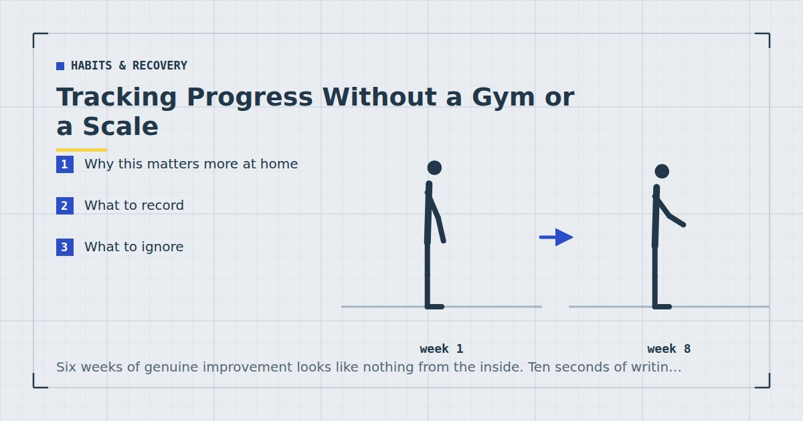

Habits & Recovery
Tracking Progress Without a Gym or a Scale
Six weeks of genuine improvement looks like nothing from the inside. Ten seconds of writing per session is what makes it visible, and visible progress is what keeps people training.

In a gym, progress announces itself: the weight on the bar goes up. At home there is no bar and no number, so improvement happens silently, and silent improvement is very easy to mistake for no improvement.
That mistake is one of the main reasons people stop. Recording a handful of numbers takes ten seconds a session and it is the highest-return habit available to a home trainee that is not training itself.
Why this matters more at home
Bodyweight progression is gradual and multidimensional. You do not add five kilos; you add a repetition, then slow the tempo, then lower the surface an inch. Each change is individually small enough to be invisible.
Compare six weeks ago to today and the difference is often substantial — twelve counter push-ups have become eight on the floor, which is a large change. But felt week to week, nothing appears to happen.
Without a record you have only the mirror and the scale, both of which move too slowly and too noisily to say anything useful over six weeks. That mismatch between real progress and perceived progress is exactly what produces the pattern described in beating the six-week drop-off.
What to record
Four things, and the first is most of the value.
1. Reps on the first exercise of each session. The cleanest signal, because it is measured when you are freshest and least affected by how the rest of the session went. Note the variation too — "push-up, floor, 8" rather than "push-ups 8".
2. Which stage you are on. Where you sit on each progression ladder, per bodyweight exercise progressions. This is what makes a jump from counter to floor visible as progress rather than as a drop in reps.
3. Sessions completed per week. One number. It is the variable that determines outcomes more than any other and the easiest to be vague about in retrospect.
4. How the last set felt. A single word — easy, hard, failed. Useful context for why a number moved, and the earliest signal that recovery is slipping, which is one of the criteria in deload weeks for home training.
That is it. Anything more elaborate tends to be abandoned within a month.
What to ignore
Calories burned. Estimates for bodyweight training are wildly variable, and the number encourages the belief that exercise is how weight is managed — the honest version is in the realistic weight-loss plan.
Total session volume, unless you enjoy arithmetic. Reps on the first exercise tells you almost as much for a fraction of the effort.
Heart rate during strength work. It tells you about cardiovascular demand, which is not what a strength session is for. Useful for intervals, where the talk test does the same job free.1
Daily weight, as an individual number. See below.
On the scale
Worth addressing carefully, because it is where most people look and where the signal is worst.
Bodyweight fluctuates by a kilogram or more day to day from water, food volume in the gut, salt intake and hormonal cycles. A single weekly reading can easily show an increase during a fortnight of genuine fat loss, and that reading is what makes people abandon plans that were working.
If you are going to weigh yourself, weigh daily and look only at the weekly average. The average is far less noisy than any individual reading, and the trend over three or four weeks is the only thing worth interpreting.
If you are doing resistance training, the scale is additionally confounded because muscle gain and fat loss can occur simultaneously, particularly in beginners — and adequate protein alongside training supports the muscle side of that.2 Two people at the same weight with different amounts of muscle look substantially different.
And if weighing yourself makes you anxious or you have any history of disordered eating, do not do it. The information is marginal and it is not worth that cost. Reps and how your clothes fit will tell you what you need.
On progress photos
More useful than the scale and worse than the numbers, for a specific reason: you see yourself daily, so gradual change is invisible, and a photo from twelve weeks ago is genuinely informative in a way the mirror is not.
If you take them: same time of day, same lighting, same position, monthly rather than weekly. Weekly photos show noise. Monthly photos show change.
The same caveat applies. If this becomes a source of anxiety rather than information, stop.
Twelve counter push-ups becoming eight on the floor is a large improvement that reads, in a notebook, as a drop from twelve to eight.
How to actually do it
The system matters less than it existing. Three that work:
A notes app on your phone. One note, newest entry at the top, four lines per session. Zero friction and always to hand.
A small notebook kept with your mat. Better for some people because it is physical and it lives where you train, so it does not compete with everything else on your phone.
A note on the wall. A sheet of paper with your current stage for each exercise, updated when you progress. Not a full log, and it covers the most important item.
The format that works looks like this:
Mon — Split squat, chair, 3×10 ea. Push-up, floor, 8/7/6 — last set hard. Row, table feet fwd, 3×12. Felt fine.
Ten seconds. Do it at the end of the session while the mat is still down, because doing it later means not doing it.
Reading your own numbers
Every six weeks, look back rather than at the last session.
Are first-exercise reps rising at the same variation and tempo? If yes, the programme is working and nothing needs changing. Weekly volume and proximity to failure drive adaptation,3 so if those are in place and numbers are moving, leave it alone.
Have you moved up any stages? Progression through the ladders is the clearest measure of real strength change over months.
What percentage of planned sessions did you complete? Above 80%, consider adding a day. Below 60%, reduce the plan rather than continuing to miss it.
If numbers are flat for six weeks at the same variation, check sleep and protein before changing the programme. Both have more evidence behind them than most programme adjustments, and both are more commonly the culprit — see sleep and strength and how much protein you need.
Where to go next
For what to expect and when, see how long until you see results from home workouts. For the plan the numbers come from, see the three-day split.
Frequently asked questions
How do I track progress without a gym?
Record four things: repetitions on the first exercise of each session with the variation noted, which stage you are on for each progression, sessions completed per week, and one word for how the last set felt. It takes about ten seconds per session.
Should I weigh myself?
If you do, weigh daily and look only at the weekly average — bodyweight fluctuates by a kilogram or more day to day, so a single weekly reading can show an increase during genuine fat loss. If weighing makes you anxious or you have any history of disordered eating, do not.
Why does my progress feel invisible?
Because bodyweight progression is gradual and multidimensional — a repetition here, a slower tempo there, a lower surface. Each change is individually too small to notice, while six weeks of them together is substantial. A written record is what makes that visible.
Are progress photos useful?
More useful than the scale, because you see yourself daily and gradual change is invisible in a mirror. Take them monthly rather than weekly, at the same time of day and in the same lighting. Stop if they become a source of anxiety.
What should I do if my numbers stop improving?
Check sleep and protein before changing the programme. Both have more evidence behind them than most programme adjustments and both are more commonly the cause of a plateau than the training itself.
Is it worth tracking calories burned during exercise?
No. Estimates for bodyweight training are wildly variable, and the number encourages the belief that exercise is how weight is managed, when diet drives most of that result.
Sources and further reading
- Mayo Clinic. Exercise intensity: How to measure it.
- Morton RW, Murphy KT, McKellar SR, et al. “A systematic review, meta-analysis and meta-regression of the effect of protein supplementation on resistance training-induced gains in muscle mass and strength in healthy adults.” British Journal of Sports Medicine, 2018;52(6):376–384. PubMed.
- Schoenfeld BJ, Ogborn D, Krieger JW. “Dose-response relationship between weekly resistance training volume and increases in muscle mass: A systematic review and meta-analysis.” Journal of Sports Sciences, 2017;35(11):1073–1082. PubMed.
- Bonnar D, Bartel K, Kakoschke N, Lang C. “Sleep Interventions Designed to Improve Athletic Performance and Recovery: A Systematic Review of Current Approaches.” Sports Medicine, 2018;48(3):683–703. PubMed.
Comments
Comments are not enabled yet. Add a hosted comment embed (Disqus, Commento, Giscus) inside this container when you are ready.